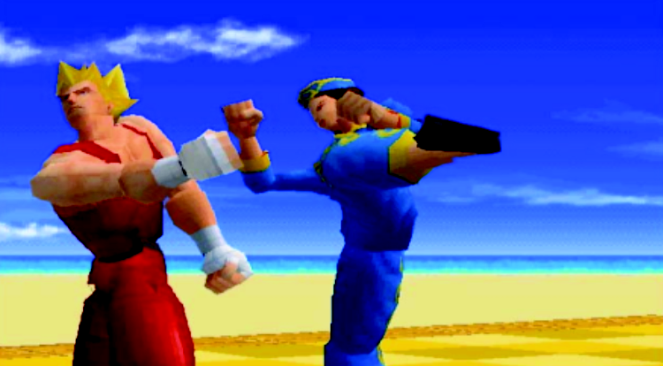
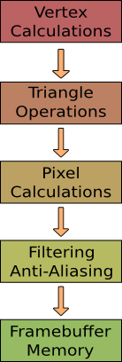
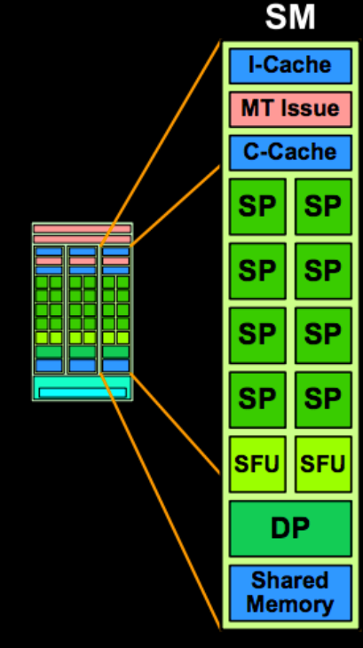

Research School of Engineering
ENGN8537: Embedded Systems and Real Time Digital Signal Processing
I had the video game company take your
Alternative Processors:
Graphics Processing Units
away because I love you.
It's like the time you took away the credit card from me when I was ordering all those porcelain babies.
It's like the time you took away the credit card from me when I was ordering all those porcelain babies.

"6600GT GPU" by Berkut - Own work. Licensed under Creative Commons Attribution-Share Alike 3.0 via Wikimedia Commons - http://commons.wikimedia.org/wiki/File:6600GT_GPU.jpg#mediaviewer/File:6600GT_GPU.jpg
We have seen SIMD architectures that allow multiple pieces of data to be processed simply with one instruction. We have then seen Stream processors that allow one piece of data to be processed with several instructions in turn. Putting this all together, we get a processor that can perform multiple instructions on multiple data at once.
The canonical example of where this is useful is in graphics processing: The operations will be rendering, shading, texturing; across lots of vertex, triangle, image or pixel data.


Originally GPUs didn’t have much to do: Turn vertices in to visible triangles, turn triangles in to pixels. Each of these used its own specialised hardware


As things evolved, more hardware was added to put textures on triangles, filtering and anti-aliasing. Pixel operations were extended to simplify reflections, shadows.
Geometry Heavy

Pixel Heavy
It was observed that with this complex sequence of operations, it wasn’t likely that all the hardware modules would be used equally. As such, hardware was often sitting idle, wasted.
GPU

Specialised hardware has been replaced with more generic hardware, able to be reconfigured to perform whatever types of graphical operations are required. The following example is from a modern NVidia card and uses their terminology, but the concepts are equally applicable to other brands.
Contains
- Memory Interfaces
- CPU Interfaces
- Workload Distribution
- Lots of Stream Multiprocessors
Stream Multiprocessors
Contain:
- Stream Processor cores
- Special Function Units
- Caches
- Memory
- Double-precision hardware
- Multi-Instruction Issue

A Stream Multiprocessor (SM) here is roughly equivalent to a Stream Processor from the previous lectures in that it can perform a sequence of operations on incoming data. Modern SMs are more powerful than the stream concept before as they aren’t strictly linear, they may throw away data chunks halfway through, perform conditional operations, split and merge streams internally etc. In terms of graphical operations, these may be things like only rendering pixels that are actually visible.
An SM contains Stream Processors (SPs) which are more limited than the previous definition - each one can perform only a single operation.
Multithreaded Issue
Scheduler for multiple threads. Ensures high SM/SP utilization.Acts as a scheduler, allowing multiple threads to be ready to run on an SM; each one getting a turn in a defined order (e.g. round-robin). A new thread may run if an old one has completed or if it is blocked (e.g. waiting for memory).
Analogous to running multiple programs on your PC at once.
Stream Processor
Contains an ALU and a Floating Point Unit. Can be wired to other SP, SFU, DP etc to form Kernel.Don't get confused between nVidia's defintion of Stream Processor and our definition from the previous lecture.
Special Function Unit
Performs particular operations such as Square Root, Logarithm.SFU Operations are expensive enough to warrant their own acceleration (as opposed to being implemented as a sequence of other operations). They are not, however common enough to warrant being added to every SP.
These operations include Square Root, Logarithm, Trig operations etc.
Double-Precision Unit
All other calculations done in Single Precision.For pixel operations, this is more than enough. For scientific computer applications of GPUs it can be a problem.
Similar To:
Superscalar
Can execute multiple different instructions at once, e.g. down different SM blocks
Vector
Can apply the same operation to different sets of data at once
Stream Processing
Can apply a sequence of operations to the same data, not just a single instruction
Superscalar processors can typically only execute two or so instructions in parallel, a GPU can execute hundreds or thousands, so it isn't a completely fair comparison.
When performing a Vector calculation on a GPU, it may be split back in to scalar components and each scalar given its own SP, but the outcome is the same: A single operation applied to multiple data at the same time.